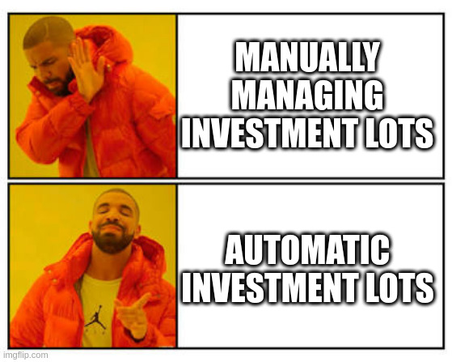

Introduction#

This script aims to help hledger's users to add transactions involving buying and selling commodities, which can be FOREX or investments assets, for example
When you sell a commodity, you should use the cost and quantity from the purchase date, which is buried deep down in your journal file so you have hledger accounting the correct Capital Gain.
This package uses FIFO method (First-In-First-Out-Method) to create a sale transaction according to information provided by the user and traverse the journal file to determine what quantity and lot prices should be used and generate a valid hledger transaction to be appended to the journal with additional helpful calculations as comment tags.
When using this package, you don't need to create lots as subaccounts or tag, just add a purchase transaction as usual and when there is a sale, hledger-fifo will generate the correct postings adding the cost for you, so you don't need to bother looking for this information.
It also generate FIFO lots reports so the user can understand his situation with a commodity and check the correctness of the generated sell transaction.
Documentation#
Documentation with usage information can be found here
Requirements#
- python
- hledger
Installation#
pip install --upgrade git+https://github.com/edkedk99/hledger-fifo.git
Workflow#
- Add purchase transaction as normal. Don't bother creating subaccounts or tags with unique lot name. See the some examples here
- When you sell, use the command sell instead of adding the transactions manually. Hledger-fifo will generate the correct transaction and print to stdout so you can add to the journal if everything is correct. See transaction tags with interesting indicators about the current trade
Reports#
To get information about the commodities, there is more 2 commands:
| command | description |
|---|---|
| lots | Get the lots and indicators for a specific commodity |
| infos | Get the indicators for all commodities as a table |
If you add price directives for the commodity in a date after the last purchase, additional indicators will be shown related to the performance of the investment. See indicators help for more detail.
Indicators#
Basic Indicators#
- Commodity Name
- Total Quantity Purchased
- Total Amount Purchased
- Average Cost
Market Indicators#
For commodities with price directives on a date after the last purchase, you will have also the following indicators:
- Last Market Price
- Market Amount: Quantitty Purchased * Last Market Price
- Market Profit: Market Amount - Amount Purchased
- Last Market Date
- XIRR
XIRR#
The sale transaction gives you the calculated xirr as tag, which is the internal rate of return of an investment based on a specified series of irregularly spaced cash flows. This value is annual percentage rate following the 30/360US day count convention. It is a good metric to compare the investment return with a benchmark like the S&P or the T-Bill, for example.
Note the benchmark can use another day count convention, so this comparison may not be 100% precise. This app may in the future offer others day count convention for xirr calculation.
Limitations#
- No short-selling
- Each commodity can have only one base currency. For example, it is not possible to buy AAPL with USD and later with EUR.